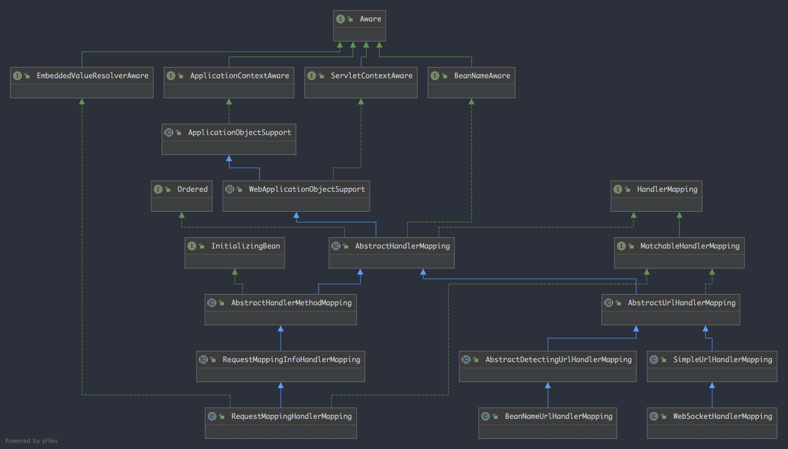

之前我们知道了 它的作用是 根据request 找到相应的 处理器 Handler 和 Interceptors，我们看下HandlerMapping的继承关系
HandlerMapping
在 HandlerMapping 接口里面只有一个方法
HandlerExecutionChain getHandler(HttpServletRequest request) throws Exception;
MatchableHandlerMapping 接口继承实现 HandlerMapping并添加一个方法
RequestMatchResult match(HttpServletRequest request, String pattern);
AbstractHandlerMapping 是 HandlerMapping 的抽象实现，所有的 HandlerMapping 都继承自 AbstractHandlerMapping。AbstractHandlerMapping 采用模板设计模式设计了 HandlerMapping，子类只需要通过模板方法提供一些初始值或者具体的算法即可。
获取Handler 的过程通过模板方法 getHandlerInternal 交给子类。 AbstractHandlerMapping 中保存了 所有配置的 Interceptor，在获取到 Handler 后悔自己根据从request 提取的 lookupPath 将相应的 Interceptors 装配上去，当然子类也可以通过 getHandlerInternal 方法设置自己的 Interceptor，getHandlerInternal 的返回值为 Object 类型
AbstractHandlerMapping 继承了 WebApplicationObjectSupport，初始化时会自动调用模板方法 initApplicationContext，AbstractHandlerMapping 的创建就是在 initApplicationContext 中实现的
protected void initApplicationContext() throws BeansException {
extendInterceptors(this.interceptors);
detectMappedInterceptors(this.adaptedInterceptors);
initInterceptors();
}
extendInterceptors 是模板方法，用于给子类提供一个添加或修改 Interceptors 的入口，不过在现有的 springMVC 的显现中并没使用
detectMappedInterceptors 方法用于将 springMVC 容器及父容器中的所有 MappedInterceptor 类型的 Bean 添加到 MappedInterceptors 属性
protected void detectMappedInterceptors(List<HandlerInterceptor> mappedInterceptors) {
mappedInterceptors.addAll(
BeanFactoryUtils.beansOfTypeIncludingAncestors(
obtainApplicationContext(), MappedInterceptor.class, true, false).values());
}
initInterceptors 方法的作用是初始化 Interceptor 具体内容其实就是将 interceptors 属性里所包含的对象按类型添加到 mappedInterceptors 或者 adaptedInterceptors，
protected void initInterceptors() {
if (!this.interceptors.isEmpty()) {
for (int i = 0; i < this.interceptors.size(); i++) {
Object interceptor = this.interceptors.get(i);
if (interceptor == null) {
throw new IllegalArgumentException("Entry number " + i + " in interceptors array is null");
}
this.adaptedInterceptors.add(adaptInterceptor(interceptor));
}
}
}
AbstractHandlerMapping 中 Interceptor 有三个 List 类型的属性 interceptors、mappedInterceptors，分别解释如下：
interceptors： 用于配置 springMVC 的拦截器，有两种设置方式：1、注册HandlerMapping 时通过属性设置；2、通过紫烈的 extendInterceptors钩子方法进行设置。interceptors 并不会直接使用，而是通过 initInterceptors 方法按类型分配到 mappedInterceptors 和 adaptedInterceptors 中进行使用，Inteceptors 只用于配置。
mappedInterceptors：此类 Interceptor 在使用时需要与请求的 url 进行匹配，只有匹配成功后才会添加到 getHandler 的返回值 HandlerExecutionChain 里。它有两种获取途径：从 interceptors 获取 或者注册到 spring 的容器中通过 detectMappedInterceptors 方法获取。
adaptedInterceptors：这种类型的Interceptor 不需要进行匹配，在 getHandler 中会全部添加到返回值 HandlerExecutionChain里面，它只从 interceptors中获取
HandlerMapping 是通过 getHandler 方法来获取处理器 Handler 和拦截器 Interceptor的，下面看一下 getHandler 在 AbstractHandlerMapping 中的实现
public final HandlerExecutionChain getHandler(HttpServletRequest request) throws Exception {
// 根据请求的URI 拿到对应的Handler 对象
Object handler = getHandlerInternal(request);
// 没有获取到 Handler 对象，则取默认的Handler
if (handler == null) {
// 获取 defaultHandler 属性，此属性在配置 HandlerMapping的时候进行配置，也可以在子类中进行设置
handler = getDefaultHandler();
}
if (handler == null) {
return null;
}
// 如果获取到的 Handler 是 String 类型，则以它为名到 springMVC 容器里查找相应的 Bean
if (handler instanceof String) {
String handlerName = (String) handler;
handler = obtainApplicationContext().getBean(handlerName);
}
// 获取 HandlerMethod 和过滤器链的 包装类
HandlerExecutionChain executionChain = getHandlerExecutionChain(handler, request);
// 是否跨域请求，就是查看request请求头中是否有Origin属性
if (CorsUtils.isCorsRequest(request)) {
// 自定义的钩子方法 获取跨域配置
CorsConfiguration globalConfig = this.corsConfigurationSource.getCorsConfiguration(request);
// 注解获取跨域配置
CorsConfiguration handlerConfig = getCorsConfiguration(handler, request);
CorsConfiguration config = (globalConfig != null ? globalConfig.combine(handlerConfig) : handlerConfig);
// 设置跨域的过滤器 CorsInterceptor
executionChain = getCorsHandlerExecutionChain(request, executionChain, config);
}
return executionChain;
}
getHandlerExccutionChain 方法用于添加拦截器
protected HandlerExecutionChain getHandlerExecutionChain(Object handler, HttpServletRequest request) {
// 把 Handler 对象包装到 HandlerExecutionChain 对象中，这个对象中有过滤器对象
HandlerExecutionChain chain = (handler instanceof HandlerExecutionChain ? (HandlerExecutionChain) handler : new HandlerExecutionChain(handler));
// 获取 uri
String lookupPath = this.urlPathHelper.getLookupPathForRequest(request);
// 是否有过滤器
for (HandlerInterceptor interceptor : this.adaptedInterceptors) {
if (interceptor instanceof MappedInterceptor) {
MappedInterceptor mappedInterceptor = (MappedInterceptor) interceptor;
if (mappedInterceptor.matches(lookupPath, this.pathMatcher)) {
chain.addInterceptor(mappedInterceptor.getInterceptor());
}
} else {
chain.addInterceptor(interceptor);
}
}
return chain;
}
从名字中可以看出 它事通过 url 来进行匹配的，其大致原理是 将 url 与对应的 Handler 保存在一个Map 中，在 getHandlerInternal 方法中使用 url 从 Map 中获取 Handler，AbstractURLHandlerMapping 中实现了具体用 url 从 Map 中获取 Handler 的过程，而 Map 的初始化则交给了具体的子孙类去完成。
这里的 Map 就是 定义在 AbstractUrlHandlerMapping 中的 handlerMap 容器，另外还单独定义了处理 "/" 请求的处理器 rootHandler，定义如下：
private Object rootHandler;
private final Map<String, Object> handlerMap = new LinkedHashMap<>();
下面具体看一下是怎么获取 Handler 的，以及这个Map 是怎么创建的
前面讲过 获取 Handler的 入口是 getHandlerInternal方法，它在 AbstractUrlHandlerMapping 中的代码定义如下：
protected Object getHandlerInternal(HttpServletRequest request) throws Exception {
String lookupPath = getUrlPathHelper().getLookupPathForRequest(request);
Object handler = lookupHandler(lookupPath, request);
if (handler == null) {
// 定义一个临时变量,保存找到的原始 Handler
Object rawHandler = null;
if ("/".equals(lookupPath)) {
rawHandler = getRootHandler();
}
if (rawHandler == null) {
rawHandler = getDefaultHandler();
}
if (rawHandler != null) {
// 如果是 String 类型 则到 bean 容器中寻找
if (rawHandler instanceof String) {
String handlerName = (String) rawHandler;
rawHandler = obtainApplicationContext().getBean(handlerName);
}
// 校验找到的 Handler 和 request是否匹配，这是一个模板方法，但是springMVC 中并没有子类去使用
validateHandler(rawHandler, request);
handler = buildPathExposingHandler(rawHandler, lookupPath, lookupPath, null);
}
}
return handler;
}
用于使用 lookupPath 从 Map 中查找 Handler，不过更多的时候并不能直接从 Map 中 get 到，因为很多 Handler 都是用了 Pattern 的匹配模式，如 “/user/names/*”，这里的星号 可以代表任意内容而不是真正匹配url中的星号，如果 Pattern 中包含 PathVariable 也不能直接从 Map 中获取到。另外，一个url 还可以跟多个 Pattern 相匹配，这是还需要选择其中的最优匹配，所以查找过程其实并不是直接简单的从 Map 中获取
buildPathExposingHandler 方法用于给查找到的 Handler 注册两个拦截器 PathExposingHandlerInterceptor 和 UriTemplateVariablesHandlerInterceptor，这是两个内部拦截器，主要作用是 将于当前 url 实际匹配的 Pattern、匹配条件 和 url 模板参数等设置到 request 的属性里，这里在后面的处理过程中就可以直接从 request 属性中获取，而不需要在重新查找一遍
protected Object buildPathExposingHandler(Object rawHandler, String bestMatchingPattern,
String pathWithinMapping, @Nullable Map<String, String> uriTemplateVariables) {
HandlerExecutionChain chain = new HandlerExecutionChain(rawHandler);
chain.addInterceptor(new PathExposingHandlerInterceptor(bestMatchingPattern, pathWithinMapping));
if (!CollectionUtils.isEmpty(uriTemplateVariables)) {
chain.addInterceptor(new UriTemplateVariablesHandlerInterceptor(uriTemplateVariables));
}
return chain;
}
protected Object buildPathExposingHandler(Object rawHandler, String bestMatchingPattern,
String pathWithinMapping, @Nullable Map<String, String> uriTemplateVariables) {
HandlerExecutionChain chain = new HandlerExecutionChain(rawHandler);
chain.addInterceptor(new PathExposingHandlerInterceptor(bestMatchingPattern, pathWithinMapping));
if (!CollectionUtils.isEmpty(uriTemplateVariables)) {
chain.addInterceptor(new UriTemplateVariablesHandlerInterceptor(uriTemplateVariables));
}
return chain;
}
在 buildPathExposingHandler 方法中给 Handler注册两个内部拦截器 PathExposingHandlerInterceptor 和 UriTemplateVariablesHandlerInterceptor，这两个拦截器分别在 preHandle 中调用了 exposePathWithinMapping 和 exposeUriTemplateVariables 方法将相应内容设置到了 request 的属性。
在 SimpleUrlHandlerMapping 在创建时 通过重写父类的 initApplicationContext 方法调用了 registerHandlers 方法完成 Handler的注册，registerHandlers 内部又调用了 AbstractUrlHandlerMapping 的 registerHandler 方法将我们配置的 urlMap 注册到 AbstractUrlHandlerMapping 的Map 中。
AbstractDetectingUrlHandlerMapping 也是通过重写 initApplicationContext 来注册 Handler 的
AbstractHandlerMethodMapping以及其实现类 是将 Method 作为Handler来使用的，也是我们现在使用最多的一种 Handler，比如常用的 @RequestMapping 所标注的方法就是这种 Handler，它专门有一个类型 HandlerMethod ，也就是Method类型的 Handler。
在 AbstractHandlerMethodMapping 中定义了 一个内部类 MappingRegistry
class MappingRegistry {
private final Map<T, MappingRegistration<T>> registry = new HashMap<>();
private final Map<T, HandlerMethod> mappingLookup = new LinkedHashMap<>();
private final MultiValueMap<String, T> urlLookup = new LinkedMultiValueMap<>();
private final Map<String, List<HandlerMethod>> nameLookup = new ConcurrentHashMap<>();
private final Map<HandlerMethod, CorsConfiguration> corsLookup = new ConcurrentHashMap<>();
private final ReentrantReadWriteLock readWriteLock = new ReentrantReadWriteLock();
}
这里的泛型 T 来自于 AbstractHandlerMethodMapping 类的定义
public abstract class AbstractHandlerMethodMapping<T> extends AbstractHandlerMapping implements InitializingBean
泛型 T 用来代表 匹配Handler 的条件 专门使用的一种类，这里的条件就不只是 url，还可以有很多其他条件，如 request 的类型 （GET、POST)、请求参数、Header 等 都可以作为匹配 HandlerMethod 的条件，默认使用的 是 RequestMappingInfo，从 RequestMappingInfoHandlerMapping 的定义就可以看出
public abstract class RequestMappingInfoHandlerMapping extends AbstractHandlerMethodMapping<RequestMappingInfo>
RequestMappingInfo 实现了 RequestCondition 接口，此接口专门用于保存从 request 提取出用于匹配 Handler 的条件
RequestCondition (org.springframework.web.servlet.mvc.condition)
RequestMappingInfo (org.springframework.web.servlet.mvc.method)
AbstractRequestCondition (org.springframework.web.servlet.mvc.condition)
RequestMethodsRequestCondition (org.springframework.web.servlet.mvc.condition)
PatternsRequestCondition (org.springframework.web.servlet.mvc.condition)
ProducesRequestCondition (org.springframework.web.servlet.mvc.condition)
ParamsRequestCondition (org.springframework.web.servlet.mvc.condition)
RequestConditionHolder (org.springframework.web.servlet.mvc.condition)
ConsumesRequestCondition (org.springframework.web.servlet.mvc.condition)
HeadersRequestCondition (org.springframework.web.servlet.mvc.condition)
CompositeRequestCondition (org.springframework.web.servlet.mvc.condition)
抽象实现 AbstractRequestCondition 中 重写了 equals、hashCode 和 toString 三个方法，有8个子类，除了 CompositeRequestCondition 外每个子类表示一种匹配条件。
AbstractRequestCondition 本身并不实际做匹配，而是可以将多个别的 RequestCondition 封装到 自己的一个变量中，在用的时候 遍历封装 RequestCondition 的那个变量里所有的 Request 进行匹配，就是我们数学系的责任链模式。
RequestCondition 的另一个实现就是这里要用的 RequestMappingInfo，它里面其实是用 7 个变量保存了 7个 RequestCondition，在匹配的时候使用那 7 个变量进行匹配，也就是可以在 @RequestMapping 中 给处理器指定多种匹配方式的原因。
public final class RequestMappingInfo implements RequestCondition<RequestMappingInfo> {
@Nullable
private final String name;
private final PatternsRequestCondition patternsCondition;
private final RequestMethodsRequestCondition methodsCondition;
private final ParamsRequestCondition paramsCondition;
private final HeadersRequestCondition headersCondition;
private final ConsumesRequestCondition consumesCondition;
private final ProducesRequestCondition producesCondition;
private final RequestConditionHolder customConditionHolder;
}
下面重新回到 AbstractHandlerMethodMapping的内部类 MappingRegistry
保存着匹配条件也就是 RequestCondition 和 HandlerMethod 的对应关系，可以通过前者匹配条件 得到具体的 HandlerMethod
保存着 url 与匹配条件的关系，可以通过 url 拿到匹配条件当然这里的 url 是 Pattern 匹配方式，另外这里使用Map的类型是 MultiValueMap 这是一种一个 key 对应多个值得 Map
public interface MultiValueMap<K, V> extends Map<K, List<V>>
由于 RequestCondition 可以同时使用多种不同的匹配方式 而不只是 url 一种，所以反过来说 同一个 url 就可能有多个 RequestCondition 与之对应，这里的 RequestCondition 其实就是在 @RequestMapping 中注释的内容
它保存着 name 与 HandlerMethod 的对应关系，这里的 name 是使用 HandlerMethodMappingNamingStrategy策略的实现类从 HandlerMethod 中解析出来的，默认使用 RequestMappingInfoHandlerMethodMappingNamingStrategy 实现类，解析规则是： 类名里的大写字母组合 + “#” + 方法名，这个Map在正常的匹配过程中并不需要使用，它的主要作用 在 MvcUriComponentsBuilder 里面，可以用来根据name 获取对应的 url
public abstract class AbstractHandlerMethodMapping<T> extends AbstractHandlerMapping implements InitializingBean
AbstractHandlerMethodMapping 实现了 接口 InitializingBean，所以 spring 容器会自动调用器 afterPropertiesSet 方法
public void afterPropertiesSet() {
initHandlerMethods();
}
protected void initHandlerMethods() {
// getCandidateBeanNames 从容器中获取所有的 beanName
for (String beanName : getCandidateBeanNames()) {
if (!beanName.startsWith(SCOPED_TARGET_NAME_PREFIX)) {
processCandidateBean(beanName);
}
}
handlerMethodsInitialized(getHandlerMethods());
}
protected void processCandidateBean(String beanName) {
Class<?> beanType = null;
try {
beanType = obtainApplicationContext().getType(beanName);
}
catch (Throwable ex) {
xxx
}
// isHandler(beanType) 判断类前是否有 @Controller 或者 @RequestMapping 注释
if (beanType != null && isHandler(beanType)) {
detectHandlerMethods(beanName);
}
}
isHandler 筛选出 带有 @Controller 或者 @RequestMapping 注解的 beanType，代码如下
RequestMappingHandlerMapping
// org.springframework.web.servlet.mvc.method.annotation.RequestMappingHandlerMapping#isHandler
protected boolean isHandler(Class<?> beanType) {
return (AnnotatedElementUtils.hasAnnotation(beanType, Controller.class) ||
AnnotatedElementUtils.hasAnnotation(beanType, RequestMapping.class));
}
从这里可以看出 spring 其实是将 处理请求的方法所在的类看做是 Handler 了，而不是处理请求的方法，不过很多地方也需要使用处理请求的方法 HandlerMethod 作为 Handler 去看待，比如AbstractHandlerMethodMapping 的 getHandlerInternal 方法返回的 Handler 就是 HandlerMethod 类型 。对于筛选出来的 Handler 中的 方法进行是啊选以及注册
// org.springframework.web.servlet.handler.AbstractHandlerMethodMapping#detectHandlerMethods
protected void detectHandlerMethods(Object handler) {
// 获取 HandlerType 的类型
Class<?> handlerType = (handler instanceof String ? obtainApplicationContext().getType((String) handler) : handler.getClass());
if (handlerType != null) {
// 如果是 cglib 代理的子对象类型，则返回父类型，否则直接返回传入的类型
Class<?> userType = ClassUtils.getUserClass(handlerType);
// 获取当前 bean 里面所有符合 Handler 要求的 Method
Map<Method, T> methods = MethodIntrospector.selectMethods(userType,
new MethodIntrospector.MetadataLookup<T>() {
@Override
public T inspect(Method method) {
try {
return AbstractHandlerMethodMapping.this.getMappingForMethod(method, userType);
} catch (Throwable ex) {
throw new IllegalStateException("Invalid mapping on handler class [" +
userType.getName() + "]: " + method, ex);
}
}
});
if (logger.isTraceEnabled()) {
logger.trace(formatMappings(userType, methods));
}
// forEach 内 lambada 表示式： new BiConsumer<Method, T>()
methods.forEach((method, mapping) -> {
Method invocableMethod = AopUtils.selectInvocableMethod(method, userType);
// 将符合要求的 Method 注册起来，也就是保存到 那几个 Map 中，其中 mapping 是 RequestMappingInfo 匹配条件
registerHandlerMethod(handler, invocableMethod, mapping);
});
}
}
首先从传入的 Handler 中 找到符合要求的方法
// org.springframework.core.MethodIntrospector#selectMethods
public static <T> Map<Method, T> selectMethods(Class<?> targetType, final MetadataLookup<T> metadataLookup) {
final Map<Method, T> methodMap = new LinkedHashMap<>();
Set<Class<?>> handlerTypes = new LinkedHashSet<>();
Class<?> specificHandlerType = null;
if (!Proxy.isProxyClass(targetType)) {
specificHandlerType = ClassUtils.getUserClass(targetType);
handlerTypes.add(specificHandlerType);
}
handlerTypes.addAll(ClassUtils.getAllInterfacesForClassAsSet(targetType));
for (Class<?> currentHandlerType : handlerTypes) {
final Class<?> targetClass = (specificHandlerType != null ? specificHandlerType : currentHandlerType);
// 循环 currentHandlerType 类的所有方法
ReflectionUtils.doWithMethods(currentHandlerType, method -> {
Method specificMethod = ClassUtils.getMostSpecificMethod(method, targetClass);
// 判断方法上面是否有 @RequestMapping 注解，如果有，封装对象返回
T result = metadataLookup.inspect(specificMethod);
if (result != null) {
Method bridgedMethod = BridgeMethodResolver.findBridgedMethod(specificMethod);
if (bridgedMethod == specificMethod || metadataLookup.inspect(bridgedMethod) == null) {
// 建立方法对象和注解封装对象的映射关系
methodMap.put(specificMethod, result);
}
}
}, ReflectionUtils.USER_DECLARED_METHODS);
}
return methodMap;
}
在匿名类里面调用的方法 getMappingForMethod，这是一个模板方法，具体实现 在 RequestMappingHandlerMapping 子类中，如下所示：
// org.springframework.web.servlet.mvc.method.annotation.RequestMappingHandlerMapping#getMappingForMethod
// 判断方法上面是否有 @RequestMapping 注解，如果有，封装对象返回
protected RequestMappingInfo getMappingForMethod(Method method, Class<?> handlerType) {
// 判断方法上面是否有 @RequestMapping 注解，如果有，封装对象返回
RequestMappingInfo info = createRequestMappingInfo(method);
if (info != null) {
RequestMappingInfo typeInfo = createRequestMappingInfo(handlerType);
if (typeInfo != null) {
info = typeInfo.combine(info);
}
String prefix = getPathPrefix(handlerType);
if (prefix != null) {
info = RequestMappingInfo.paths(prefix).build().combine(info);
}
}
return info;
}
private RequestMappingInfo createRequestMappingInfo(AnnotatedElement element) {
RequestMapping requestMapping = AnnotatedElementUtils.findMergedAnnotation(element, RequestMapping.class);
RequestCondition<?> condition = (element instanceof Class ?
getCustomTypeCondition((Class<?>) element) : getCustomMethodCondition((Method) element));
return (requestMapping != null ? createRequestMappingInfo(requestMapping, condition) : null);
}
protected RequestMappingInfo createRequestMappingInfo(
RequestMapping requestMapping, @Nullable RequestCondition<?> customCondition) {
RequestMappingInfo.Builder builder = RequestMappingInfo
.paths(resolveEmbeddedValuesInPatterns(requestMapping.path()))
.methods(requestMapping.method())
.params(requestMapping.params())
.headers(requestMapping.headers())
.consumes(requestMapping.consumes())
.produces(requestMapping.produces())
.mappingName(requestMapping.name());
if (customCondition != null) {
builder.customCondition(customCondition);
}
return builder.options(this.config).build();
}
下面针对筛选出来的带有 @RequestMapping 的Method 进行注册
// org.springframework.web.servlet.handler.AbstractHandlerMethodMapping#registerHandlerMethod
protected void registerHandlerMethod(Object handler, Method method, T mapping) {
this.mappingRegistry.register(mapping, handler, method);
}
// org.springframework.web.servlet.handler.AbstractHandlerMethodMapping.MappingRegistry#register
public void register(T mapping, Object handler, Method method) {
this.readWriteLock.writeLock().lock();
try {
HandlerMethod handlerMethod = createHandlerMethod(handler, method);
assertUniqueMethodMapping(handlerMethod, mapping);
this.mappingLookup.put(mapping, handlerMethod);
List<String> directUrls = getDirectUrls(mapping);
for (String url : directUrls) {
this.urlLookup.add(url, mapping);
}
String name = null;
if (getNamingStrategy() != null) {
name = getNamingStrategy().getName(handlerMethod, mapping);
addMappingName(name, handlerMethod);
}
CorsConfiguration corsConfig = initCorsConfiguration(handler, method, mapping);
if (corsConfig != null) {
this.corsLookup.put(handlerMethod, corsConfig);
}
this.registry.put(mapping, new MappingRegistration<>(mapping, handlerMethod, directUrls, name));
}
finally {
this.readWriteLock.writeLock().unlock();
}
}
AbstractHandlerMethodMapping 创建之后，其主要作用就是通过 getHandlerInternal 方法获取到 Handler 处理器
protected HandlerMethod getHandlerInternal(HttpServletRequest request) throws Exception {
// 从request对象中获取 URI
String lookupPath = getUrlPathHelper().getLookupPathForRequest(request);
this.mappingRegistry.acquireReadLock();
try {
// 根据URI 从映射关系中 找到对应的 HandlerMethod 对象
HandlerMethod handlerMethod = lookupHandlerMethod(lookupPath, request);
//
return (handlerMethod != null ? handlerMethod.createWithResolvedBean() : null);
}
finally {
this.mappingRegistry.releaseReadLock();
}
}
下面继续看下 lookupHandlerMethod 方法
protected HandlerMethod lookupHandlerMethod(String lookupPath, HttpServletRequest request) throws Exception {
// Match 是内部类，持有 mapping 和 HandlerMethod 的引用
List<Match> matches = new ArrayList<>();
// 根据 lookupPath （是uri） 获取到 匹配条件 RequestMappingInfo
List<T> directPathMatches = this.mappingRegistry.getMappingsByUrl(lookupPath);
if (directPathMatches != null) {
// 将找到的的匹配条件和 HandlerMethod 封装到 Matches 对象中
addMatchingMappings(directPathMatches, matches, request);
}
// 如果不能从 urlLookup 中 获取到和 loopupPath 相匹配的 RequestMappingInfo，则将所有匹配条件加入 matches
if (matches.isEmpty()) {
// No choice but to go through all mappings...
addMatchingMappings(this.mappingRegistry.getMappings().keySet(), matches, request);
}
if (!matches.isEmpty()) {
// 将包含匹配条件RequestMappingInfo 和 handler 的 matches 排序，并取第一个作为 bestMatch，如果前面两个排序相同抛出异常
Comparator<Match> comparator = new MatchComparator(getMappingComparator(request));
matches.sort(comparator);
Match bestMatch = matches.get(0);
if (matches.size() > 1) {
if (CorsUtils.isPreFlightRequest(request)) {
return PREFLIGHT_AMBIGUOUS_MATCH;
}
Match secondBestMatch = matches.get(1);
// 如果两个 RequestMappingInfo 完全相同，报错
if (comparator.compare(bestMatch, secondBestMatch) == 0) {
Method m1 = bestMatch.handlerMethod.getMethod();
Method m2 = secondBestMatch.handlerMethod.getMethod();
String uri = request.getRequestURI();
throw new IllegalStateException(
"Ambiguous handler methods mapped for '" + uri + "': {" + m1 + ", " + m2 + "}");
}
}
request.setAttribute(BEST_MATCHING_HANDLER_ATTRIBUTE, bestMatch.handlerMethod);
handleMatch(bestMatch.mapping, lookupPath, request);
return bestMatch.handlerMethod;
}
else {
return handleNoMatch(this.mappingRegistry.getMappings().keySet(), lookupPath, request);
}
}
内部类 Match
private class Match {
private final T mapping;
private final HandlerMethod handlerMethod;
public Match(T mapping, HandlerMethod handlerMethod) {
this.mapping = mapping;
this.handlerMethod = handlerMethod;
}
@Override
public String toString() {
return this.mapping.toString();
}
}
整个过程中 是是用Match 作为载体，封装了 匹配条件 RequestMappingInfo 和 HandlerMethod两个属性，handleMatch 方法在子类 RequestMappingInfoHandlerMapping 中实现，为了以后使用方便